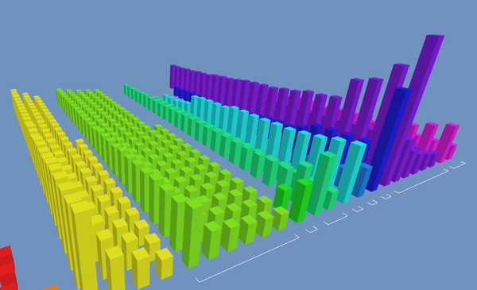
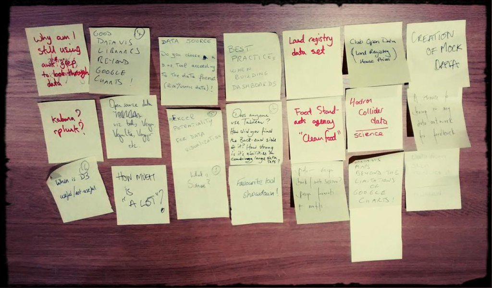
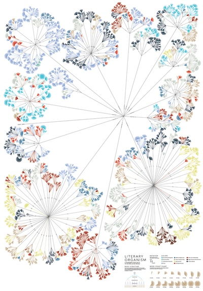
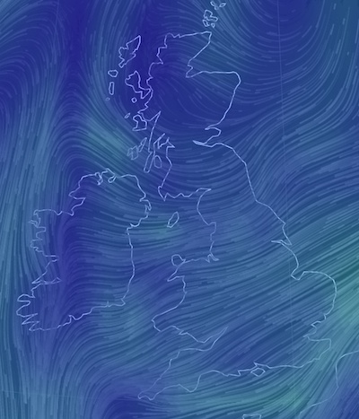
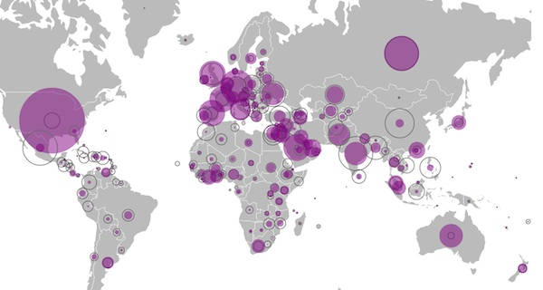

We're a diverse group of designers, developers, artists, scientists, analysts etc. all with a shared interest in data visualisation.
We meet every 4th Tuesday of the month at The Skiff, Brighton.
For more information visit our Meetup page.
Topics discussed included:
Other links mentioned:
Local developer Berl Steiner presented his new web app called 3D Data Explorer which can visualise a generic data set (such as a CSV file output by Excel) using 3 dimensions.
3D Data Explorer also has a number of operations which allow the dataset to be explored and I’ve seen myself that insights can be found that may otherwise have been missed.

We had local designer/developer/artist Mike Brondbjerg of Kultur Design talk about data driven generative systems. Mike's work ranges from analytical information design & data visualisations through to data illustration, animated data visualisation, and generative/data art & design. In this meet up Mike talked us through some of the techniques he uses to create illustration, motion graphics and generative logo systems.
Listening to @mikebrondbjerg discuss Systems for Drawing at @datavisbrighton at @theskiff pic.twitter.com/IH5abgElmO
— Danny Hope (@yandle) November 22, 2016
And now @kyran_dale showing and telling data visualisation with python and javascript pic.twitter.com/XuhY6fGDaA
— datavisbrighton (@datavisbrighton) October 25, 2016
Recapping @interpl8's Visualising the Intangible @datavisbrighton workshop pic.twitter.com/ia1536FOcU
— datavisbrighton (@datavisbrighton) October 25, 2016
Fascinating talk by @carolinebeavon on My Route project https://t.co/v6YhE0b0Sc show&tell @datavisbrighton pic.twitter.com/l70rfKcXTt
— datavisbrighton (@datavisbrighton) October 25, 2016
I demonstrated the Brighton (Electoral) Ward Explorer https://t.co/KPK1eJCwG7 by @thomasforth at @datavisbrighton last night
— Jez Nicholson (@jnicho02) October 26, 2016
We were lucky to have local graphic designer and illustrator Clare Plumley (@interpl8) facilitate a session related to her sensory data work. Clare has recently been exploring the more intangible forms of data such as our emotions and has been looking at ways of conveying them in print and other media. We looked at some of Clare's work and in small groups explored different approaches to visualising her data. See some of Clare's work at www.behance.net/interpl8.
We discussed a range of topics including:
We discussed a range of topics including:
We had a good turnout and discussed a range of topics including:
This will be an informal workshop for learning and sharing knowledge related to data visualisation. It'll be a chance to do any of the following:
There are on pre-requsites except an interest in data visualisation. If you're new to data visualisation and don't know where to start or you're just interested then this'll be a good evening to come along. Likewise if you're a seasoned D3 developer with a desire to share your knowledge!
I'll also bring along some resources such as links to useful tools as well as some books for inspiration.
Note the slightly earlier start time of 7pm. Do try and come along for 7, but there isn't a problem if you come later. We'll wrap up around 9pm.
Data artist Stefanie Posavec will talk about her unique approach to visualising data. Eschewing the usual tools used for data visualisation she has evolved a unique approach which is both immersive and beautiful.

Stefanie’s work includes hand-crafted visualisations of Jack Kerouac’s On The Road and has been featured in Wired UK and the book Information is Beautiful. Her work has also been exhibited at Somerset House, the V&A, and the Museum of Modern Art, New York.
This evening is part of the Brighton Digital Festival.
This meeting will be more informal than the previous ones and it'll be a good chance for us to get to know each other better.
At the beginning we'll collate a list of topics to discuss and we'll do our best to cover each of them.
Ideas include:
So if you have anything data visualisation related that you'd like to discuss please come along. Likewise if you're just interested in the subject please do come along.
Hope to see you there!
The recent development in data visualisation tools has led to a blossoming of creativity resulting in more and more innovation and experimentation. It's safe to say that we're no longer bound to stock charts such as bar charts, pie charts, line graphs etc. when presenting our data. Is this a good thing?
Some say keep it simple whilst others like to push the boundaries.
This evening we'll take a look at a bunch of data visualisations and discuss what works & what doesn't.
(You're also invited to bring a link to a data visualisation that you find interesting. If you're prepared to present it for 5-10 minutes, that'd be great, otherwise just email me the details.)
We expect that the evening will be inspiring, informative and enlightening.
Sources for data visualisations:
Visualisations looked at during the evening included:
There's a huge number of tools for creating data visualisations, ranging from Excel & Tableau, to programming environments such as Processing, R, Python and JavaScript, through to interactive environments such as NodeBox and it's not always easy to select the right one for the job.
Therefore we'll give an overview of these toolsets with members of the community talking about their tools of choice. We will also start looking at the processes for transforming data into a visualisation.
Tools looked at during the evening included:
For more discussion see the event page.
Our very first Meetup and a chance to introduce ourselves.
We had a good turnout (~20 people) and a good buzz right from the start. Amongst the attendees were: